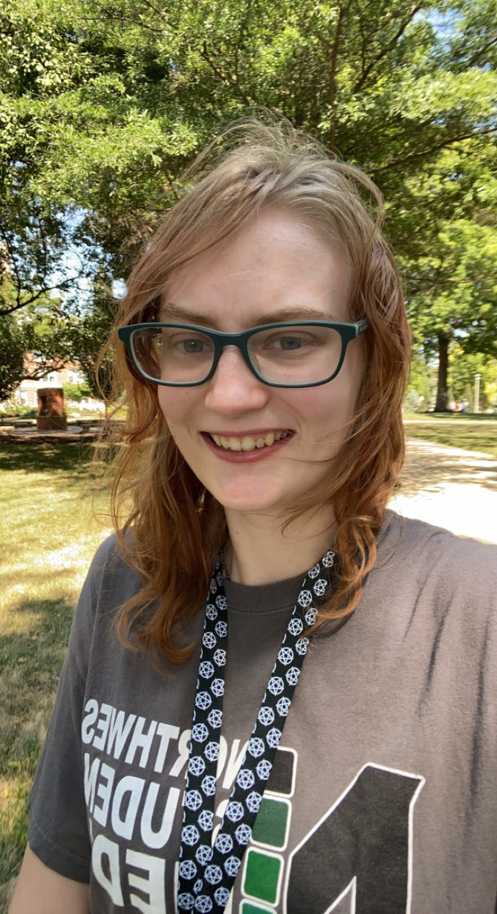
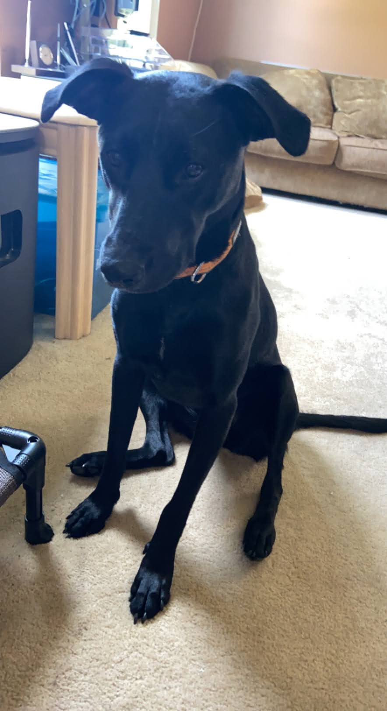

Hello, I am Olivia Bradshaw (she/them). While I am orgianlly from Ballwin Missouri, I am studying Digital Media: Content Strategy at Northwest Missouri State Univeristy in Maryville Missouri.
I have been a part of my campus' radio station KZLX for over 2 years. Currently I work as the operations director there and the promotions director. Every Monday night I host a radio show called Pagan Power, where I discuss myths from around the world while playing music with pagan themes.
Someone very dear to me is my dog Raven. She is a rescue dog who is not even 2 years old yet. Raven is a mix-breed: Labrador Retriever, German Shepard, American Staffordshire Terrier, Rottweiler, and English Settler. 